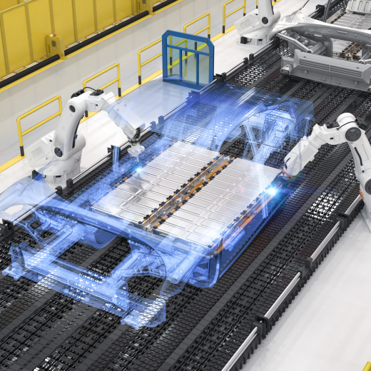
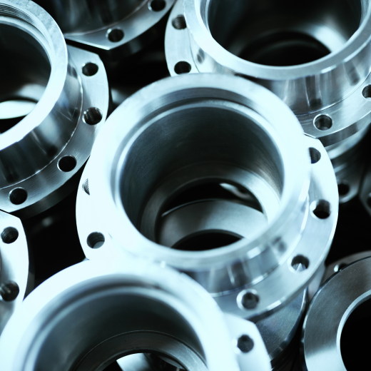
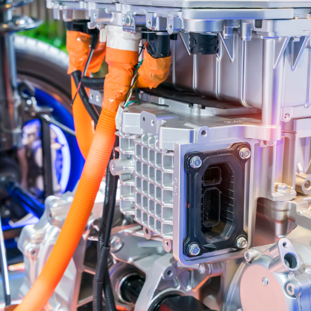

전력 반도체 선도 기업인 고객사는 작업자가 투입과 실적을 수작업으로 보고하여 생산성이 떨어지는 문제가 있었습니다. 미라콤의 MESplus로 전산화된 제조 관리 체계를 만들어 명확한 생산 집계 데이터를 수집할 수 있었고, delivery 일정과 안정적인 생산 계획을 수립할 수 있었습니다. 이를 통해 생산 관리를 강화하여 제조 리드 타임을 최소화의 목표를 달성할 수 있었습니다.

자동차 배터리 전문 기업인 고객사는 신공장 생산라인 확산을 위해 제조 운영 인프라와 배터리 업종 특화 기능이 반영된 MES를 구축하였습니다. 공정 이상 발생에 대한 사전 감지로 품질 사고 방지 체계를 확보하였고, 설비 상태 모니터링을 통해 설비 가동률을 향상하였습니다. 이를 통해 고객사는 업무 효율 증대와 경쟁력 향상을 통해 지속 성장할 수 있게 되었습니다.
#MES
#MC

글로벌 알루미늄 부품 전문 기업인 고객사는 현장의 데이터를 수작업으로 관리하는 문제가 있었습니다. 미라콤 MES를 구축하여 실적 및 Lot Tracking 관리로 추적성을 확보하고, 생산 및 품질 정보 수집을 위한 데이터 수집 기반을 마련하였습니다. 이를 통해 작업자의 실수로 발생하는 문제가 감소하였고, 품질 이슈를 확인하고 조치하는 시간이 80% 단축되었고, 수기 작업이 75% 감소하는 성과를 보였습니다. 고객사는 MES 구축을 통해 금형부터 사후관리까지 원스탑 시스템을 갖춘 국내 유일 기업으로의 위상을 높였습니다.
#MES

국내 1위 자동차 부품 기업인 고객사는 기구축한 MES의 노후화로 인해 공정라인 변경이 어려웠고, 다양한 고객 주문에 따른 생산 대응이 어려운 문제가 있었습니다. 고객사는 다양한 국가에 존재하는 모든 공장에 표준화된 관리 체계를 수립하기 위해 미라콤 MES기반으로 생산/물류 아키텍처를 설계하였고, 제조 생산을 위한 설비, ERP 등 IT시스템을 재구축 하였습니다. 이로 인해 고객사는 해외 공장에 확산이 용이한 글로벌 표준 통합시스템을 구축하여 지속적으로 업무 효율을 높여 자동차 부품 산업의 리더가 될 수 있었습니다.
#MES
#ERP
세계에서 인정받는 첨단소재(가스,화학분야)를 제조하는 고객사는 공정 투입/실적/품질 정보가 분산되어 있고, ERP 중심으로만 생산 실적을 관리하여 현장 관리 및 실시간 데이터 확인이 어려운 문제가 있었습니다. 미라콤 MES를 구축하여 현장 업무의 프로세스 표준화와 품질 데이터 자동 집계 기능을 추가한 통합 생산 관리 체계를 만들었습니다. 이를 통해 제조 관리 역량이 강화되고, 품질 수준이 향상되어 글로벌 첨단소재 분야를 선도하는 기업으로 자리잡을 수 있었습니다.